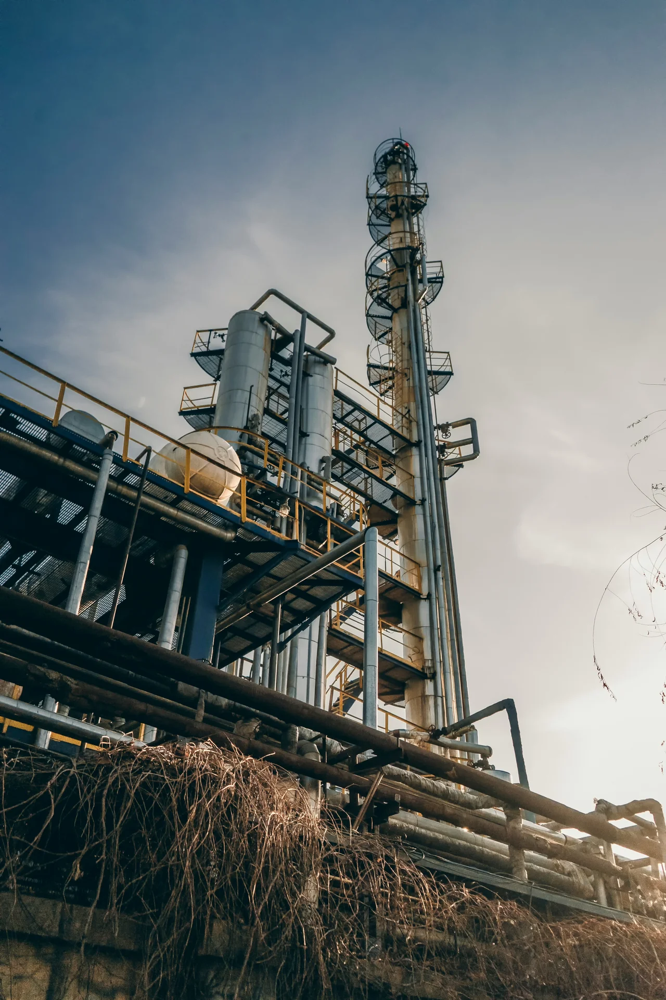

Nan Ge
Co-Founder & CEO
PhD
We’re developing technology to turn industrial waste heat into electricity.
Putting more of industry’s energy to work.
Technology
Our approach uses the Organic Rankine Cycle to convert recovered heat into electricity.
Transfer heat from an industrial process to a working fluid.
Expand the heated working fluid to drive a generator and produce electricity.
Condense and pump the working fluid back through the closed loop.
Industrial applications
We’re exploring waste heat recovery across energy-intensive industries.

About Cardinal Volta
Founded by Nan Ge and Aimy Bazylak, Cardinal Volta brings energy research and engineering together in Toronto.
Co-Founder & CEO
PhD
Co-Founder &
Chief Science Officer
PhD, PEng
排版占位 · 内容待补
采用文字列表，无配图也可以成立。
需要：标题、日期、正文或原文链接。
收到内容后，按实际数量排版。